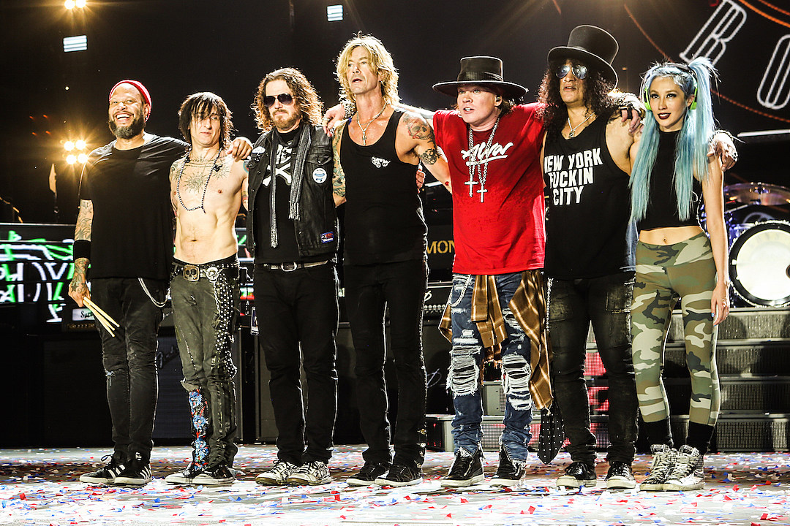

Introduction
Guns n' Roses, sometimes abbreviated as GNR, are an American hard rock band formed in 1985 in the streets of the Sunset Strip, Los Angeles. Guns n' Roses were one of the greatest bands of the 80s and 90s and they sure stand out from the rest of the bands from their time. In an era dominated by disco and hair metal, they brought down and dirty hard rock back into the mainstream. Their first album changed the world - Appetite for Destruction. It was and still is the best-selling debut album in the world. Their major twin Illusions album release was also a huge success, as they both have sold almost 6 million albums in the USA. Nowadays, their legacy is still remembered as one of the best bands in history. They are still touring, and former members Duff McKagan and Slash reunited with Axl Rose to form part of the original line-up. As of today, Guns n' Roses have sold over 100 million albums worldwide, making them the 41st best-selling artist of all time.
Guns n' Roses Now
Guns n' Roses' current line-up consists of seven people, with lead vocalist Axl Rose, lead guitarist Slash, bassist Duff McKagan, keyboardists Dizzy Reed and Melissa Reese, rhythm guitarist Richard Fortus, and drummer Frank Ferrer. Classic line-up members Slash and Duff reunited with Axl Rose in 2016 after almost 20 years, and together they embarked on the Not in this Lifetime tour. This tour has been massively successful, and has grossed around $480000000 as of December 2017. This makes the tour the 4th highest-grossing concert tour of all time. During this time, Axl Rose also became the lead singer of the band AC/DC, as their lead singer, Brian Johnson, was struggling with health issues. The band is now discussing on plans to create new music, but the band has not yet hit the studio.
Guns n' Roses Albums
Guns n' Roses have released very little albums over the course of 30 years, as they have only released 6 albums since their formation in 1985. Nevertheless, they still have been hugely successful, with these 6 albums accumulating over 100 million sales worldwide, and 45 million in the USA alone. The most popular album is clearly Appetite for Destruction, as it is the most successful debut album ever, while the Illusions albums are still quite successful, selling approximately 6 million each. The other 3 have been moderately successful, but have not reached the stardom of the others. Below are all of Guns n' Roses' studio albums.
| Album | Singles | Peak Chart Position | Date Released |
|---|---|---|---|
| Appetite for Destruction | It's So Easy, Welcome to the Jungle, Sweet Child of Mine, Paradise City, Nightrain | No. 1 | July 21, 1987 |
| G N' R Lies | Patience | No. 4 | November 29, 1988 |
| Use Your Illusion 1 | Don't Cry, Live and Let Die, November Rain | No. 2 | September 17, 1991 |
| Use Your Illusion 2 | You Could Be Mine, Knockin' On Heaven's Door, Yesterday's, Civil War, Estranged | No. 1 | September 17, 1991 |
| "The Spaghetti Incident?" | Ain't It Fun, Since I Don't Have You, Hair of the Dog | No. 4 | November 23, 1993 |
| Chinese Democracy | Chinese Democracy | No. 3 | November 23, 2008 |